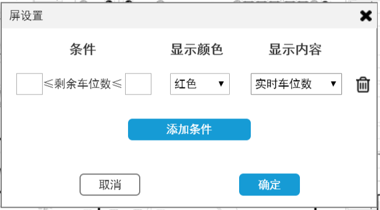
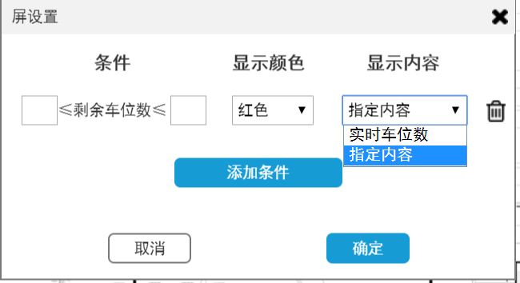
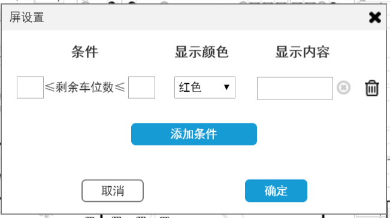
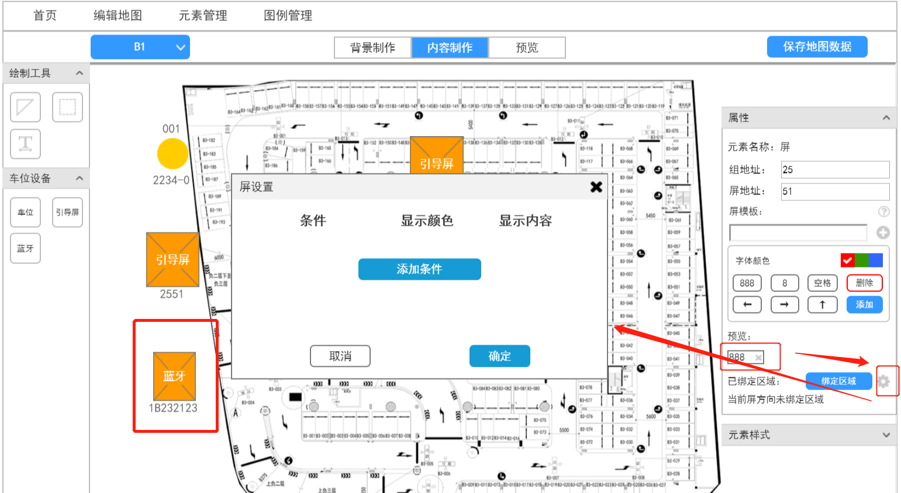
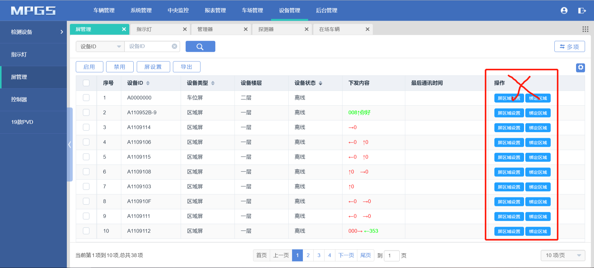

业务说明：
1、去掉原屏管理的屏区域设置和绑定区域功能，只保留地图编辑器一个入口；
2、在地图-屏属性面板增加屏条件设置功能，屏条件设置与屏模板挂钩，添加屏模板之后才展示“绑定区域”按钮和“屏设置”按钮入口
3、地图-屏属性面板-“绑定区域”按钮后增加条件设置的入口，点击设置按钮弹出弹窗，可添加条件以及符合条件时的显示内容和显示颜色。
4、当xx≤当前该屏所绑定引导区域的剩余车位数≤xx时，显示颜色为红/绿/蓝，可显示实时车位数，也可以显示指定内容，指定内容为输入框。


